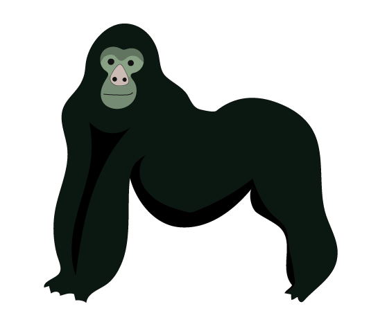

CHIMPANSE
Vægt: Hannerne vejer 50-70 kg og hunnerne vejer 40-60 kg.
Højde: Hanner 100-170 cm og hunner: 70-130 cm.
Levealder: 40-50 år
Føde: Frugt, blade, frø, nødder, stængler, bark, termitter, myrer og mindre pattedyr.
Levested: Tropisk regnskov og skovsavanne i Vest- og Centralafrika.
Sjove facts om chimpansen
Mennesket er chimpansens nærmeste slægtning og 98,2% af deres gener er lig menneskets.
Chimpansen er én af de få dyrearter, som bruger redskaber. De bruger mange forskellige og det er forskelligt fra gruppe til gruppe hvilke de bruger.
Chimpanser har et varieret sprog bestående af dels lyde og mimik, dels berøringer, bevægelser og positurer.
Chimpansegrupper kan føre »krig« mod andre grupper.